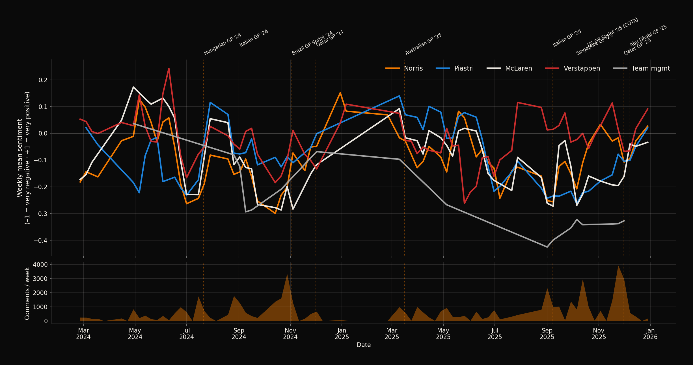
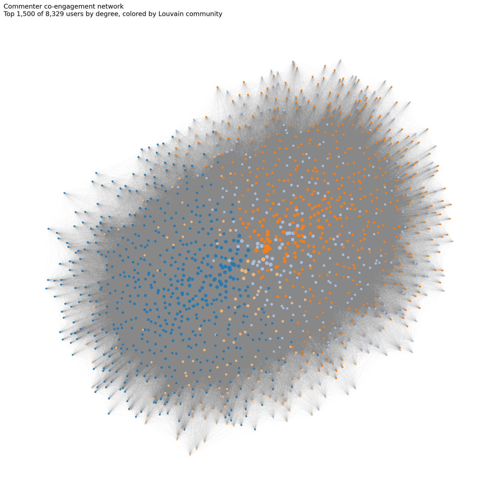
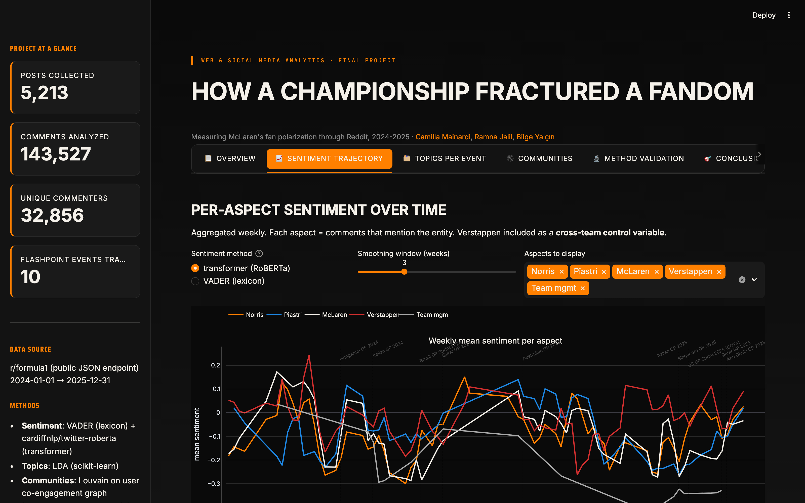

Web & Social Media Analytics · Final project
How a championship
fractured a fandom
Measuring McLaren's fan polarization through Reddit, 2024-2025.
Camilla Mainardi · Ramna Jalil · Bilge Yalçın
2026
01 / 10
The business of fandom.
Formula 1 is a media and sponsorship business in which fan perception is brand value. When teams make controversial in-race decisions, that value is publicly negotiated — in real time — on social media.
- Social platforms are the primary surface for fan sentiment in elite sports.
- Traditional fan-perception tools (surveys, focus groups) are slow and expensive.
- Reddit communities aggregate the most engaged segment of any fanbase.
- Opportunity: real-time social listening as a polarization detector.
F1 industry revenue
$3.7B
2024 — driven primarily by broadcasting, sponsorship and race-promotion contracts.
02 / 10
The selected idea
When a sports brand makes controversial in-season decisions, can we detect from social media alone whether its fanbase has fractured — and pinpoint when, where, and how severely?
Subject
McLaren F1, navigating an internal championship battle between teammates
Lando Norris and Oscar Piastri across 2024-2025 — defined by ten
controversial 'team orders' moments, starting with the Hungarian GP 2024
swap (patient zero).
03 / 10
The dataset.
SOURCE — REDDIT.COM/R/FORMULA1 · 2024-2025
Volume 01
5,213
Reddit posts collected from r/formula1 via the public JSON endpoint.
→ 44% fall within the 2024-2025 target window
Volume 02
143k
Comments fetched with full author and parent-thread preserved.
→ 110,960 in 2024-2025 window analyzed
People
32k
Unique commenters — the input to community detection.
→ 8,329 active users (≥3 posts)
Anchors
10
Flashpoint races identified as analytical anchors (F1-expert sourced).
→ Patient zero: Hungarian GP 2024
Time span: January 2024 → December 2025
Resumable scraper · checkpoint every 5,000 comments · polite rate-limiting
04 / 10
Did sentiment actually crash?
ANALYSIS 1 · ASPECT-ORIENTED SENTIMENT · CARDIFFNLP/TWITTER-ROBERTA · WEEKLY · 110,960 COMMENTS

–0.44
McLaren sentiment at Hungary 2024 — patient zero confirmed.
–0.44
Team-management sentiment at Italian GP 2025 — the 'slow pit stops' event.
≈ 0
Verstappen as cross-team control — proves negativity is McLaren-specific.
05 / 10
What were fans arguing about?
ANALYSIS 2 · LDA, K=5 PER EVENT · ±7 DAYS WINDOW
2025-09-07 · Italian GP
"Slow pit stops are part of racing"
"We said a slow pit stop was part of racing. I don't really get what changed here." — Piastri's iconic radio message.
pit · stop · slow · swap · undercut
+0.00
2025-10-05 · Singapore GP
"Papaya rules" emerges as a topic
LDA isolates the explicit "papaya rules" bigram as a topic-defining term — the framework itself is now being debated.
papaya · rules · contact · incident
+0.06
2025-10-18 · US GP Sprint
Zak Brown enters the discourse
First and only event where 'Zak' is a top topic term. Fans name and blame leadership for the Norris-Piastri collision.
piastri · norris · zak
−0.02
2025-11-30 · Qatar GP
Strategy failure crystallized
Alternative-strategy decision sealed Verstappen's win. Profanity surfaces as defining vocabulary in the dominant topic.
lando · mclaren · pit · said
−0.01
2024-07-21 · Hungarian GP
Patient zero of the schism
The original Norris-Piastri swap. Reluctance over the radio became the defining audio clip of the McLaren saga.
lando · mclaren · oscar · win
+0.08
2025-12-07 · Abu Dhabi GP
Bittersweet championship topic
Highest-sentiment topic of the dataset (+0.24) — yet team-management sentiment hits a season low (−0.33) the same week.
lando · max · championship · won
+0.24
06 / 10
Did the fanbase split into tribes?
ANALYSIS 3 · LOUVAIN ON CO-ENGAGEMENT GRAPH · 8,329 USERS · 937,864 EDGES · MODULARITY 0.267


C3
Smallest community (n=643) is mildly Norris-leaning and holds
the most negative McLaren-team sentiment (−0.27). The polarization is
primarily emotional, not structural.
07 / 10
How we measured it.
METHODS & STRATEGIES · OPEN-SOURCE PYTHON STACK
01
Collection
Reddit's public JSON API. Polite rate-limiting, full comment-tree extraction, checkpoint resumability.
requests · python-stdlib
02
Sentiment
Transformer model (cardiffnlp/twitter-roberta), validated against VADER baseline at Pearson r=0.44.
transformers · torch
03
Topics
Latent Dirichlet Allocation, K=5 per event. TF-IDF features, n-gram (1,2), domain stop-word filtering.
scikit-learn · pandas
04
Network
Bipartite users × posts → user-user co-engagement. Louvain community detection plus centrality.
networkx · python-louvain
05
Aspects
Regex-based entity-mention detection. Five aspects: Norris, Piastri, McLaren, Verstappen, Team mgmt.
re · pandas
06
Validation
Two-method triangulation. VADER's documented positive bias justified the transformer as primary.
scipy · stratified sampling
07
Events
Ten flashpoint races as analytical anchors. ±7-day windows for event-conditioned analyses.
F1-expert sourced timeline
08
Control
Verstappen sentiment as cross-team control variable to isolate McLaren-specific effects.
cross-aspect comparison
08 / 10
The prototype.
STREAMLIT DASHBOARD · INTERACTIVE PLOTLY CHARTS · 6 ANALYTICAL VIEWS · LOCAL DEPLOYMENT
localhost:8501 — How a championship fractured a fandom

Interactive trajectory
Toggle aspects, switch VADER ↔ transformer, choose smoothing window.
Event drill-down
Pick any of 10 flashpoints → top LDA topics with representative comments.
Community explorer
Per-community sentiment table + network image + bridge users ranked.
Method validation
VADER vs Transformer scatter, with disagreement examples surfaced.
09 / 10
A multi-layered
fracture.
fracture.
Layer 01
Temporal
McLaren-aspect sentiment crashes at every flashpoint while Verstappen baseline holds. Patient zero: Hungary 2024.
Layer 02
Topical
Distinct grievance topics emerge per event. 'Slow pit stops', 'Zak Brown', 'papaya rules' become discrete LDA clusters.
Layer 03
Structural
Mild Norris-leaning sub-tribe (n=643) holds the worst team sentiment. Polarization is detectable in the network.
"Winning didn't heal the fracture — and championship victories do not erase the brand debt."
Camilla Mainardi · Ramna Jalil · Bilge Yalçın · Web & Social Media Analytics · 2026
10 / 10